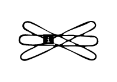

<!DOCTYPE html>
<html lang="kr"></html>
<head>
  <meta charset="UTF-8">
  <meta http-equiv="X-UA-compitable" content="IE-edge">
  <meta name="viewport" content="width=device-width", initial-scale="1.0">
  <title>i</title>
  <link href="i.css" rel="stylesheet">
  <script type="text/javascript">
    document.oncontextmenu = function(){return false;}
    function redirectToRandomPage() { 
            // Array of specific pages on the website 
            const pages = [ 
                'index7.html', 
                'index14.html', 
                'index21.html', 
                'index28.html' 
            ]; 
            // Generate a random index 
            const randomIndex = Math.floor(Math.random() * pages.length); 
            // Redirect to the randomly selected page 
            window.location.href = pages[randomIndex]; 
    }
  </script>
</head>
<body oncontextmenu="return false" onselectstart="return false" ondragstart="return false" onkeydown="return false">
  <div class="box-container">
      <div class="box-item1">
        <div class="map">
          <a onclick="redirectToRandomPage()">
            
          </a>
          <p>집적회로 속의 여성들</p>
          <div class="comment">
            <p>해러웨이는 페미니즘의 교차성, 과학 기술과 페미니즘이 맺는 다층적인 관계 등을 강조한다. 이 페이지는 해러웨이의 사이보그 선언문을 발췌하여 유관한 그래픽과 함께 제시한다.</p>
          </div>
      </div>
    </div>
    <div class="box-item2">
      
    </div>
    <div class="box-item3">
      <a href="c7.html">
        </a>
        <span class="text1">c. 민첩하고<br>가느다란 손가락</span>
      <a href="e7.html">
        </a>
        <span class="text2">e. 그 자체로<br>신성한 것은<br>없다 </span>
      <a href="g7.html">
        </a>
        <span class="text3">g. 우리는<br>부활이 아닌<br>재생을 요구한다</span>
      </div>
    </div>
  </div>
</body>